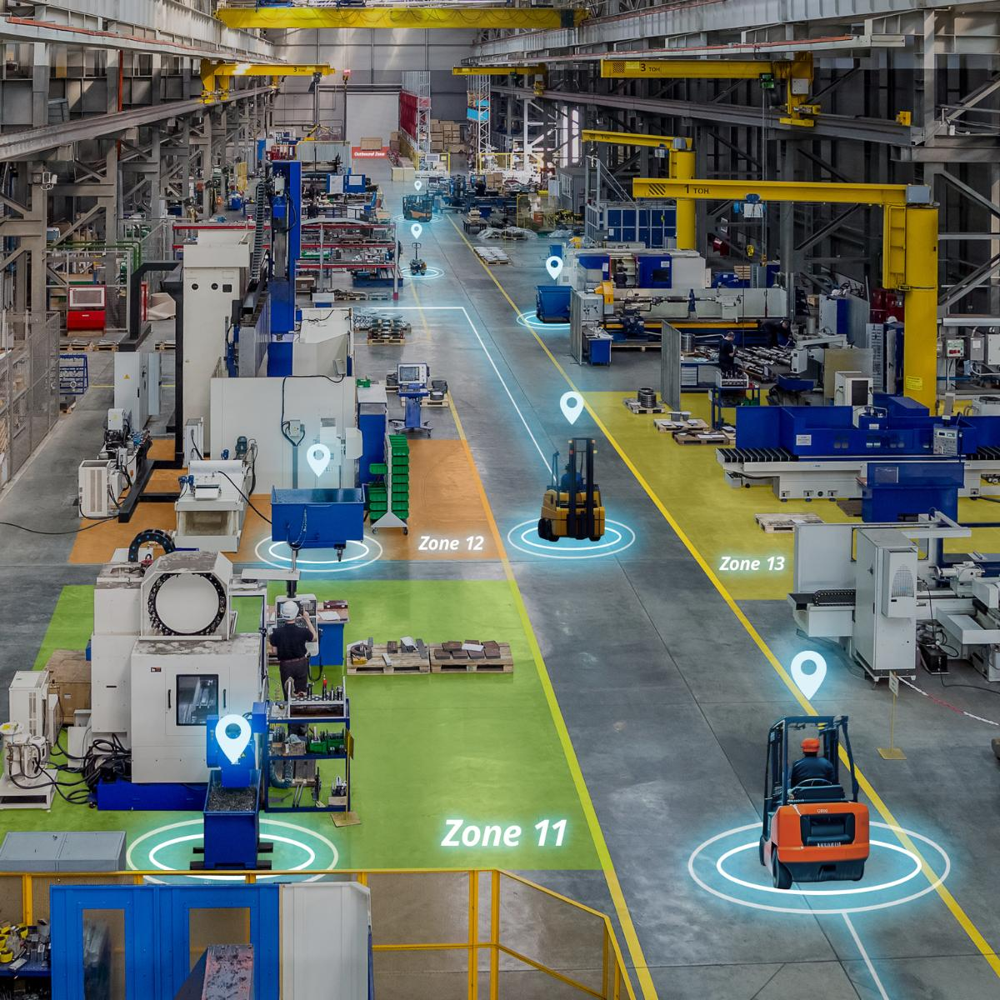

Innovent deployed Innfini as the national-level Control Tower for the Australian Navy — live across 20 ASC locations Australia-wide, including submarine manufacturing and total fleet operations, and unifying 30+ existing systems into one platform.

Innovent deployed Innfini as the national-level Control Tower for the Australian Navy — live across 20 ASC locations Australia-wide, including submarine manufacturing and total fleet operations, and unifying 30+ existing systems into one platform.
Production orchestration, work-order tracking and shop-floor visibility integrated end-to-end into the control tower.
Unified inventory, financial and physical-security operations across every site.
Site-wide situational awareness across every ASC location through integrated video telemetry.
Vehicle telemetry, GPS and end-to-end tracking across operational zones.
RFID/RTLS personnel tracking, mustering and safety across yards and submarine workshops.
Continuous temperature and condition tracking for sensitive materials and components.
A national control tower for the Australian Navy — submarine manufacturing, every site, every asset, every person, on one operating picture.
Our solutions team will walk your environment, your systems, and your operators' day — and show what an Innfini deployment looks like in your context.